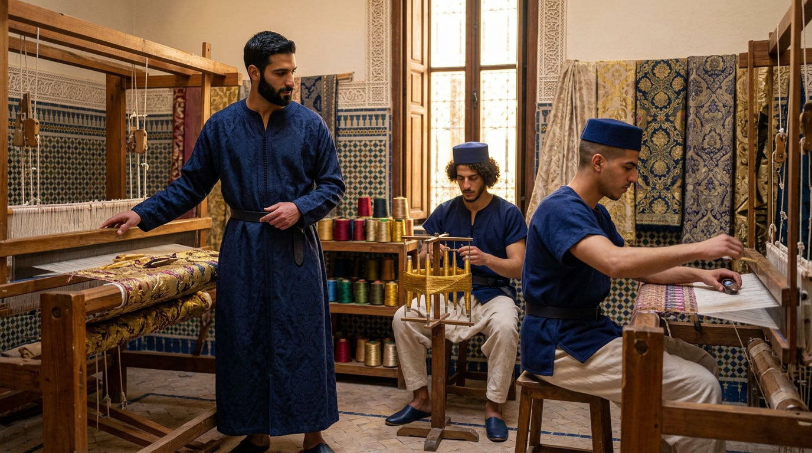
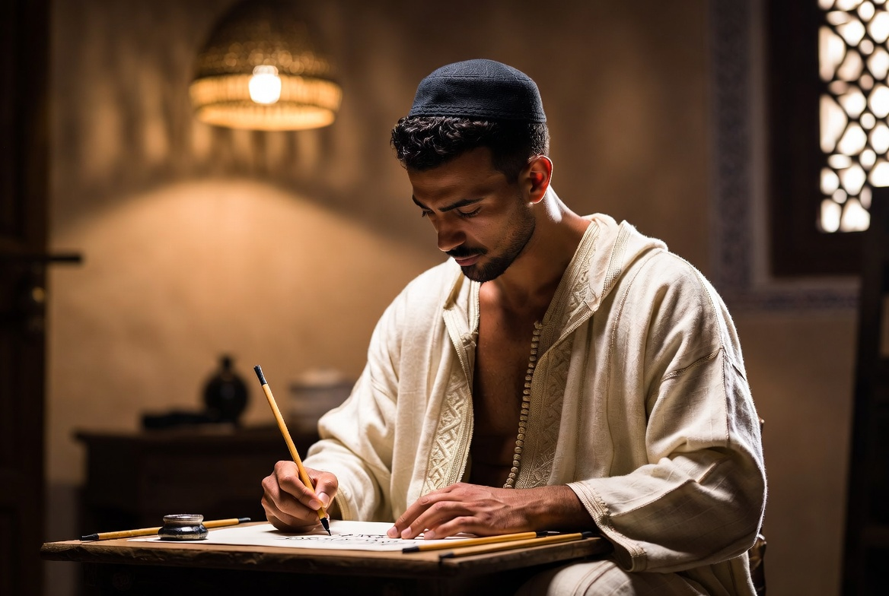
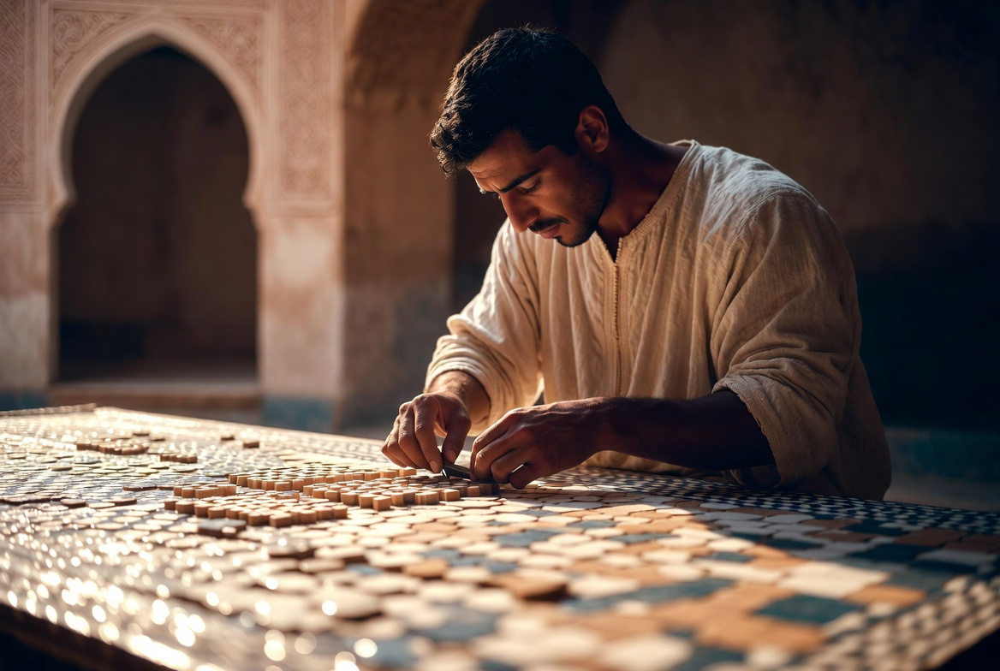
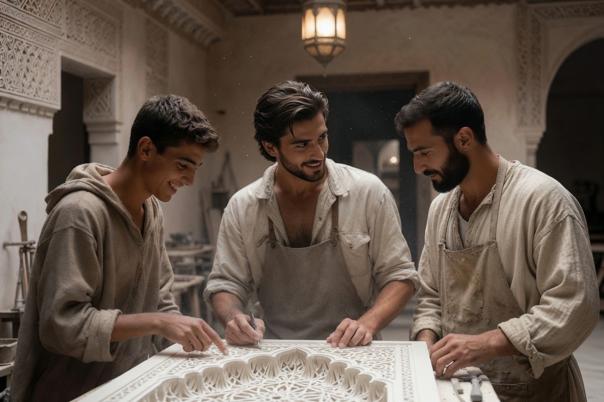
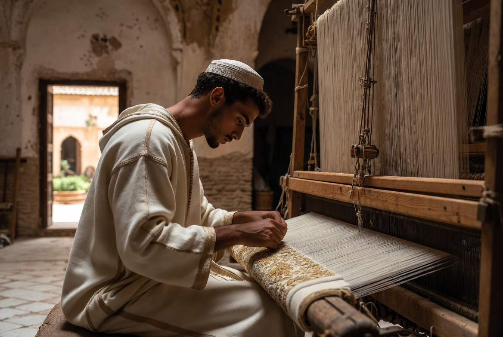
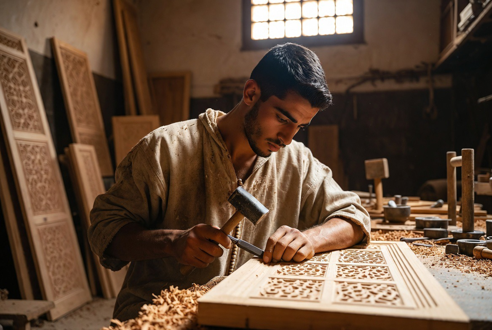

Les métiers de la main
اليد إذا عملت أحسنت
« La main, quand elle œuvre, embellit. »

Cinq disciplines composent le cœur artisanal de Dar al-Hiraf. Chaque métier s'apprend geste après geste, sous la conduite d'un maalem, dans le même rythme que la prière, l'étude et la vie commune.

Calligraphie
Le qalam, la page, le souffle. Écriture comme discipline intérieure.
Le Maghreb développe sa propre écriture, le khatt maghrebi — distincte du naskh ou du thuluth orientaux. Née en al-Andalus, elle se fixe à Fès après la Reconquista. La basmala reste le premier exercice de tout apprenti calligraphe.
الخطُّ هندسةٌ روحانيةٌ ظهرتْ بآلةٍ جسمانيةٍ
« La calligraphie est une géométrie de l'esprit apparue par un instrument du corps. » — Ibn Muqla
La basmala — bismillah al-rahman al-rahim — ouvre le Coran et rythme la vie quotidienne. C'est aussi le premier exercice de tout apprenti calligraphe : geste fondateur avant d'être motif décoratif, elle orne depuis toujours frontispices de manuscrits, portes de médersas et façades de mosquées.

Zellige
Géométrie, coupe, pose.
Le terme zillij vient d'une racine arabe désignant la petite pierre polie. L'art naît à Fès sous les Mérinides, aux XIIIe-XIVe siècles — les médersas Bou Inania et al-ʿAttarin en restent les témoins les plus achevés.
Chaque pièce est taillée séparément au marteau (minqash), à partir de carreaux émaillés monochromes cuits un à un. L'assemblage se fait à l'envers : le maalem compose le motif face cachée, et ne le retourne qu'une fois terminé — les grilles géométriques sont mémorisées et transmises oralement, comme un répertoire musical.
Cette géométrie n'est jamais purement décorative : l'entrelacs qui se répète sans début ni fin visible est lu, dans la pensée islamique, comme une image du tawhid — l'unité derrière la multiplicité des formes.

Plâtre & mocárabe
Stuc sculpté, relief, lumière.
Le geste naît à Samarra, capitale abbasside du IXe siècle, où se développe le premier style d'ornementation entièrement abstrait de l'art islamique. Il atteint sa pleine maturité plus tard en al-Andalus puis dans le Maghreb mérinide, avec le muqarnas — les alvéoles en nid d'abeille qui couvrent coupoles et portails.
Le muqarnas — alvéoles de plâtre sculpté suspendues en stalactites — naît probablement en Perse et en Mésopotamie aux Xe-XIe siècles, mais atteint sa pleine maturité géométrique en al-Andalus et au Maghreb : la coupole de la Salle des Deux Sœurs, à l'Alhambra, en reste le sommet.
Contrairement au zellige, le muqarnas a produit une véritable littérature technique : au XVe siècle, le mathématicien persan Qadi Ahmad ibn Muhammad al-Kashi rédigea un traité expliquant comment décomposer géométriquement une coupole en modules standard.
Chaque alvéole est sculptée dans le plâtre encore frais, en un temps très court avant que la matière ne durcisse — ce qui explique pourquoi cet atelier, seul parmi ceux du Riad, ne forme pas d'hôtes de passage.
الجصُّ لا يُتقَنُ إلا بيدٍ تعرفُ متى تتوقفُ
« Le plâtre ne s'accomplit que sous une main qui sait quand s'arrêter. »

Tissage & brocart
Soie, fil d'or, métier à tirage.
L'atelier reprend le geste du tiraz (طراز) — l'inscription tissée ou brodée que les ateliers d'État, la dar al-tiraz (دار الطراز), produisaient dans le monde arabe médiéval, de l'Égypte fatimide à l'Andalousie omeyyade. Réservé d'abord au souverain (tiraz khassa), puis étendu aux dignitaires (tiraz ʿamma), le tissu inscrit scellait la khilʿa (خلعة) — le don d'une robe d'honneur, geste politique autant que textile.
Cette tradition franchit la Méditerranée jusqu'à Palerme, où des artisans arabes tissent en 1133-34, pour Roger II de Sicile, roi normand, le manteau de couronnement aujourd'hui conservé au Kunsthistorisches Museum de Vienne : soie rouge brodée d'or, de perles et d'émaux, bordée d'une inscription coufique donnant lieu et date de fabrication, deux lions affrontant des chameaux de part et d'autre d'un palmier stylisé.
ممّا عُمِلَ بالخزانةِ الملكيةِ المعمورةِ […] بمدينةِ صِقِلِّيَةَ سنةَ ثمانٍ وعشرين وخمسمائة
« Ce qui fut confectionné dans le trésor royal florissant […] dans la ville de Sicile, l'an cinq cent vingt-huit. » — inscription brodée sur l'ourlet du manteau de Roger II, atelier royal de Palerme, 528 H / 1133-34
(Transcription et traduction d'après I. Dolezalek, Arabic Script on Christian Kings, De Gruyter, 2017 — l'inscription complète, en prose rimée, énumère les vertus et bienfaits du trésor royal ; seuls l'incipit et la formule finale, avec le lieu et la date, sont reproduits ici.)
À Fès, le fil d'or et d'argent porte un nom propre : le sqalli. Toute une corporation, les maʿallemin sqalli, se consacre à sa fabrication — batteurs d'or, lamineurs, tréfileurs, fileuses — avant que le fil ne rejoigne le métier à tirage, la mrema bejebbad, où les rôles se répartissent : le zouaq dessine le motif, le nyar monte le métier, le medewar prépare les bobines, le jebbad tisse, sous l'autorité du maalem. Une hypothèse répandue, sans confirmation académique certaine, rattache le nom sqalli à la Sicile (Siqilliyya) — écho possible de ce même circuit méditerranéen du fil d'or.
Ce brocart, tissé de soie et de fil de sqalli, habille depuis des siècles les grandes occasions. À Dar al-Hiraf, le fil d'or reste réservé aux pièces cérémonielles ; l'étoffe du quotidien se contente de la soie seule.
نسجوا من الذهبِ الورودَ على الحريرِ
« Ils ont tissé d'or des roses sur la soie. »

Bois & intaille
Sculpture, assemblage, patience du cèdre.
Le cèdre de l'Atlas moyen, avec le plâtre et le zellige, forme la triade des matériaux décoratifs marocains. Les plafonds à caissons et les moucharabiehs témoignent d'un art de l'assemblage géométrique sans clou ni colle.
والخشبُ يلينُ تحتَ يدٍ صابرةٍ
« Le bois s'assouplit sous une main patiente. »
FÈS
Capitale des arts et métiers
Ville-refuge des artisans andalous après 1492, siège de la Qarawiyyin. Sous les Mérinides, les corporations structuraient la vie urbaine autour du geste, de l'honneur et de la transmission.
Dar al-Hiraf s'ancre dans cette lignée : une formation qui unit le geste, l'honneur et la vie commune.
Ces cinq métiers de la main trouvent leur pendant du côté du corps, du verbe et du son dans Musique & chant et Furusiyya, et leur habit propre dans Al-Kiswa.
Les termes de cette page sont réunis dans le glossaire de la maison.